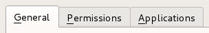
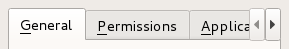

QTabBar Class
The QTabBar class provides a tab bar, e.g. for use in tabbed dialogs. More...
| Header: | #include <QTabBar> |
| CMake: | find_package(Qt6 REQUIRED COMPONENTS Widgets) target_link_libraries(mytarget PRIVATE Qt6::Widgets) |
| qmake: | QT += widgets |
| Inherits: | QWidget |
Public Types
| enum | ButtonPosition { LeftSide, RightSide } |
| enum | SelectionBehavior { SelectLeftTab, SelectRightTab, SelectPreviousTab } |
| enum | Shape { RoundedNorth, RoundedSouth, RoundedWest, RoundedEast, TriangularNorth, …, TriangularEast } |
Properties
|
|
Public Functions
| QTabBar(QWidget *parent = nullptr) | |
| virtual | ~QTabBar() |
| QString | accessibleTabName(int index) const |
| int | addTab(const QString &text) |
| int | addTab(const QIcon &icon, const QString &text) |
| bool | autoHide() const |
| bool | changeCurrentOnDrag() const |
| int | count() const |
| int | currentIndex() const |
| bool | documentMode() const |
| bool | drawBase() const |
| Qt::TextElideMode | elideMode() const |
| bool | expanding() const |
| QSize | iconSize() const |
| int | insertTab(int index, const QString &text) |
| int | insertTab(int index, const QIcon &icon, const QString &text) |
| bool | isMovable() const |
| bool | isTabEnabled(int index) const |
| bool | isTabVisible(int index) const |
| void | moveTab(int from, int to) |
| void | removeTab(int index) |
| QTabBar::SelectionBehavior | selectionBehaviorOnRemove() const |
| void | setAccessibleTabName(int index, const QString &name) |
| void | setAutoHide(bool hide) |
| void | setChangeCurrentOnDrag(bool change) |
| void | setDocumentMode(bool set) |
| void | setDrawBase(bool drawTheBase) |
| void | setElideMode(Qt::TextElideMode mode) |
| void | setExpanding(bool enabled) |
| void | setIconSize(const QSize &size) |
| void | setMovable(bool movable) |
| void | setSelectionBehaviorOnRemove(QTabBar::SelectionBehavior behavior) |
| void | setShape(QTabBar::Shape shape) |
| void | setTabButton(int index, QTabBar::ButtonPosition position, QWidget *widget) |
| void | setTabData(int index, const QVariant &data) |
| void | setTabEnabled(int index, bool enabled) |
| void | setTabIcon(int index, const QIcon &icon) |
| void | setTabText(int index, const QString &text) |
| void | setTabTextColor(int index, const QColor &color) |
| void | setTabToolTip(int index, const QString &tip) |
| void | setTabVisible(int index, bool visible) |
| void | setTabWhatsThis(int index, const QString &text) |
| void | setTabsClosable(bool closable) |
| void | setUsesScrollButtons(bool useButtons) |
| QTabBar::Shape | shape() const |
| int | tabAt(const QPoint &position) const |
| QWidget * | tabButton(int index, QTabBar::ButtonPosition position) const |
| QVariant | tabData(int index) const |
| QIcon | tabIcon(int index) const |
| QRect | tabRect(int index) const |
| QString | tabText(int index) const |
| QColor | tabTextColor(int index) const |
| QString | tabToolTip(int index) const |
| QString | tabWhatsThis(int index) const |
| bool | tabsClosable() const |
| bool | usesScrollButtons() const |
Reimplemented Public Functions
| virtual QSize | minimumSizeHint() const override |
| virtual QSize | sizeHint() const override |
Public Slots
| void | setCurrentIndex(int index) |
Signals
| void | currentChanged(int index) |
| void | tabBarClicked(int index) |
| void | tabBarDoubleClicked(int index) |
| void | tabCloseRequested(int index) |
| void | tabMoved(int from, int to) |
Protected Functions
| virtual void | initStyleOption(QStyleOptionTab *option, int tabIndex) const |
| virtual QSize | minimumTabSizeHint(int index) const |
| virtual void | tabInserted(int index) |
| virtual void | tabLayoutChange() |
| virtual void | tabRemoved(int index) |
| virtual QSize | tabSizeHint(int index) const |
Reimplemented Protected Functions
| virtual void | changeEvent(QEvent *event) override |
| virtual bool | event(QEvent *event) override |
| virtual void | hideEvent(QHideEvent *) override |
| virtual void | keyPressEvent(QKeyEvent *event) override |
| virtual void | mouseDoubleClickEvent(QMouseEvent *event) override |
| virtual void | mouseMoveEvent(QMouseEvent *event) override |
| virtual void | mousePressEvent(QMouseEvent *event) override |
| virtual void | mouseReleaseEvent(QMouseEvent *event) override |
| virtual void | paintEvent(QPaintEvent *) override |
| virtual void | resizeEvent(QResizeEvent *) override |
| virtual void | showEvent(QShowEvent *) override |
| virtual void | timerEvent(QTimerEvent *event) override |
| virtual void | wheelEvent(QWheelEvent *event) override |
Detailed Description
QTabBar is straightforward to use; it draws the tabs using one of the predefined shapes, and emits a signal when a tab is selected. It can be subclassed to tailor the look and feel. Qt also provides a ready-made QTabWidget.
Each tab has a tabText(), an optional tabIcon(), an optional tabToolTip(), optional tabWhatsThis() and optional tabData(). The tabs's attributes can be changed with setTabText(), setTabIcon(), setTabToolTip(), setTabWhatsThis and setTabData(). Each tabs can be enabled or disabled individually with setTabEnabled().
Each tab can display text in a distinct color. The current text color for a tab can be found with the tabTextColor() function. Set the text color for a particular tab with setTabTextColor().
Tabs are added using addTab(), or inserted at particular positions using insertTab(). The total number of tabs is given by count(). Tabs can be removed from the tab bar with removeTab(). Combining removeTab() and insertTab() allows you to move tabs to different positions.
The shape property defines the tabs' appearance. The choice of shape is a matter of taste, although tab dialogs (for preferences and similar) invariably use RoundedNorth. Tab controls in windows other than dialogs almost always use either RoundedSouth or TriangularSouth. Many spreadsheets and other tab controls in which all the pages are essentially similar use TriangularSouth, whereas RoundedSouth is used mostly when the pages are different (e.g. a multi-page tool palette). The default in QTabBar is RoundedNorth.
The most important part of QTabBar's API is the currentChanged() signal. This is emitted whenever the current tab changes (even at startup, when the current tab changes from 'none'). There is also a slot, setCurrentIndex(), which can be used to select a tab programmatically. The function currentIndex() returns the index of the current tab, count holds the number of tabs.
QTabBar creates automatic mnemonic keys in the manner of QAbstractButton; e.g. if a tab's label is "&Graphics", Alt+G becomes a shortcut key for switching to that tab.
The following virtual functions may need to be reimplemented in order to tailor the look and feel or store extra data with each tab:
- tabSizeHint() calcuates the size of a tab.
- tabInserted() notifies that a new tab was added.
- tabRemoved() notifies that a tab was removed.
- tabLayoutChange() notifies that the tabs have been re-laid out.
- paintEvent() paints all tabs.
For subclasses, you might also need the tabRect() functions which returns the visual geometry of a single tab.
|  | A tab bar shown in the Fusion widget style. |
|  | A truncated tab bar shown in the Fusion widget style. |
See also QTabWidget.
Member Type Documentation
enum QTabBar::ButtonPosition
This enum type lists the location of the widget on a tab.
| Constant | Value | Description |
|---|---|---|
QTabBar::LeftSide | 0 | Left side of the tab. |
QTabBar::RightSide | 1 | Right side of the tab. |
enum QTabBar::SelectionBehavior
This enum type lists the behavior of QTabBar when a tab is removed and the tab being removed is also the current tab.
| Constant | Value | Description |
|---|---|---|
QTabBar::SelectLeftTab | 0 | Select the tab to the left of the one being removed. |
QTabBar::SelectRightTab | 1 | Select the tab to the right of the one being removed. |
QTabBar::SelectPreviousTab | 2 | Select the previously selected tab. |
enum QTabBar::Shape
This enum type lists the built-in shapes supported by QTabBar. Treat these as hints as some styles may not render some of the shapes. However, position should be honored.
| Constant | Value | Description |
|---|---|---|
QTabBar::RoundedNorth | 0 | The normal rounded look above the pages |
QTabBar::RoundedSouth | 1 | The normal rounded look below the pages |
QTabBar::RoundedWest | 2 | The normal rounded look on the left side of the pages |
QTabBar::RoundedEast | 3 | The normal rounded look on the right side the pages |
QTabBar::TriangularNorth | 4 | Triangular tabs above the pages. |
QTabBar::TriangularSouth | 5 | Triangular tabs similar to those used in the Excel spreadsheet, for example |
QTabBar::TriangularWest | 6 | Triangular tabs on the left of the pages. |
QTabBar::TriangularEast | 7 | Triangular tabs on the right of the pages. |
Property Documentation
autoHide : bool
If true, the tab bar is automatically hidden when it contains less than 2 tabs.
By default, this property is false.
Access functions:
| bool | autoHide() const |
| void | setAutoHide(bool hide) |
See also QWidget::visible.
changeCurrentOnDrag : bool
If true, then the current tab is automatically changed when dragging over the tabbar.
Note: You should also set acceptDrops property to true to make this feature work.
By default, this property is false.
Access functions:
| bool | changeCurrentOnDrag() const |
| void | setChangeCurrentOnDrag(bool change) |
[read-only] count : const int
This property holds the number of tabs in the tab bar
Access functions:
| int | count() const |
currentIndex : int
This property holds the index of the tab bar's visible tab
The current index is -1 if there is no current tab.
Access functions:
| int | currentIndex() const |
| void | setCurrentIndex(int index) |
Notifier signal:
| void | currentChanged(int index) |
documentMode : bool
This property holds whether or not the tab bar is rendered in a mode suitable for the main window.
This property is used as a hint for styles to draw the tabs in a different way then they would normally look in a tab widget. On macOS this will look similar to the tabs in Safari or Sierra's Terminal.app.
Access functions:
| bool | documentMode() const |
| void | setDocumentMode(bool set) |
See also QTabWidget::documentMode.
drawBase : bool
defines whether or not tab bar should draw its base.
If true then QTabBar draws a base in relation to the styles overlap. Otherwise only the tabs are drawn.
Access functions:
| bool | drawBase() const |
| void | setDrawBase(bool drawTheBase) |
See also QStyle::pixelMetric(), QStyle::PM_TabBarBaseOverlap, and QStyleOptionTabBarBase.
elideMode : Qt::TextElideMode
how to elide text in the tab bar
This property controls how items are elided when there is not enough space to show them for a given tab bar size.
By default the value is style-dependent.
Access functions:
| Qt::TextElideMode | elideMode() const |
| void | setElideMode(Qt::TextElideMode mode) |
See also QTabWidget::elideMode, usesScrollButtons, and QStyle::SH_TabBar_ElideMode.
expanding : bool
When expanding is true QTabBar will expand the tabs to use the empty space.
By default the value is true.
Access functions:
| bool | expanding() const |
| void | setExpanding(bool enabled) |
See also QTabWidget::documentMode.
iconSize : QSize
This property holds the size for icons in the tab bar
The default value is style-dependent. iconSize is a maximum size; icons that are smaller are not scaled up.
Access functions:
| QSize | iconSize() const |
| void | setIconSize(const QSize &size) |
See also QTabWidget::iconSize.
movable : bool
This property holds whether the user can move the tabs within the tabbar area.
By default, this property is false;
Access functions:
| bool | isMovable() const |
| void | setMovable(bool movable) |
selectionBehaviorOnRemove : SelectionBehavior
What tab should be set as current when removeTab is called if the removed tab is also the current tab.
By default the value is SelectRightTab.
Access functions:
| QTabBar::SelectionBehavior | selectionBehaviorOnRemove() const |
| void | setSelectionBehaviorOnRemove(QTabBar::SelectionBehavior behavior) |
See also removeTab().
shape : Shape
This property holds the shape of the tabs in the tab bar
Possible values for this property are described by the Shape enum.
Access functions:
| QTabBar::Shape | shape() const |
| void | setShape(QTabBar::Shape shape) |
tabsClosable : bool
This property holds whether or not a tab bar should place close buttons on each tab
When tabsClosable is set to true a close button will appear on the tab on either the left or right hand side depending upon the style. When the button is clicked the tab the signal tabCloseRequested will be emitted.
By default the value is false.
Access functions:
| bool | tabsClosable() const |
| void | setTabsClosable(bool closable) |
See also setTabButton() and tabRemoved().
usesScrollButtons : bool
This property holds whether or not a tab bar should use buttons to scroll tabs when it has many tabs.
When there are too many tabs in a tab bar for its size, the tab bar can either choose to expand its size or to add buttons that allow you to scroll through the tabs.
By default the value is style-dependent.
Access functions:
| bool | usesScrollButtons() const |
| void | setUsesScrollButtons(bool useButtons) |
See also elideMode, QTabWidget::usesScrollButtons, and QStyle::SH_TabBar_PreferNoArrows.
Member Function Documentation
[explicit] QTabBar::QTabBar(QWidget *parent = nullptr)
Creates a new tab bar with the given parent.
[virtual noexcept] QTabBar::~QTabBar()
Destroys the tab bar.
QString QTabBar::accessibleTabName(int index) const
Returns the accessibleName of the tab at position index, or an empty string if index is out of range.
See also setAccessibleTabName().
int QTabBar::addTab(const QString &text)
Adds a new tab with text text. Returns the new tab's index.
int QTabBar::addTab(const QIcon &icon, const QString &text)
This is an overloaded function.
Adds a new tab with icon icon and text text. Returns the new tab's index.
[override virtual protected] void QTabBar::changeEvent(QEvent *event)
Reimplements: QWidget::changeEvent(QEvent *event).
[signal] void QTabBar::currentChanged(int index)
This signal is emitted when the tab bar's current tab changes. The new current has the given index, or -1 if there isn't a new one (for example, if there are no tab in the QTabBar)
Note: Notifier signal for property currentIndex.
[override virtual protected] bool QTabBar::event(QEvent *event)
Reimplements: QWidget::event(QEvent *event).
[override virtual protected] void QTabBar::hideEvent(QHideEvent *)
Reimplements: QWidget::hideEvent(QHideEvent *event).
[virtual protected] void QTabBar::initStyleOption(QStyleOptionTab *option, int tabIndex) const
Initialize option with the values from the tab at tabIndex. This method is useful for subclasses when they need a QStyleOptionTab, but don't want to fill in all the information themselves.
See also QStyleOption::initFrom() and QTabWidget::initStyleOption().
int QTabBar::insertTab(int index, const QString &text)
Inserts a new tab with text text at position index. If index is out of range, the new tab is appended. Returns the new tab's index.
int QTabBar::insertTab(int index, const QIcon &icon, const QString &text)
This is an overloaded function.
Inserts a new tab with icon icon and text text at position index. If index is out of range, the new tab is appended. Returns the new tab's index.
If the QTabBar was empty before this function is called, the inserted tab becomes the current tab.
Inserting a new tab at an index less than or equal to the current index will increment the current index, but keep the current tab.
bool QTabBar::isTabEnabled(int index) const
Returns true if the tab at position index is enabled; otherwise returns false.
bool QTabBar::isTabVisible(int index) const
Returns true if the tab at position index is visible; otherwise returns false.
[override virtual protected] void QTabBar::keyPressEvent(QKeyEvent *event)
Reimplements: QWidget::keyPressEvent(QKeyEvent *event).
[override virtual] QSize QTabBar::minimumSizeHint() const
Reimplements an access function for property: QWidget::minimumSizeHint.
[virtual protected] QSize QTabBar::minimumTabSizeHint(int index) const
Returns the minimum tab size hint for the tab at position index.
[override virtual protected] void QTabBar::mouseDoubleClickEvent(QMouseEvent *event)
Reimplements: QWidget::mouseDoubleClickEvent(QMouseEvent *event).
[override virtual protected] void QTabBar::mouseMoveEvent(QMouseEvent *event)
Reimplements: QWidget::mouseMoveEvent(QMouseEvent *event).
[override virtual protected] void QTabBar::mousePressEvent(QMouseEvent *event)
Reimplements: QWidget::mousePressEvent(QMouseEvent *event).
[override virtual protected] void QTabBar::mouseReleaseEvent(QMouseEvent *event)
Reimplements: QWidget::mouseReleaseEvent(QMouseEvent *event).
void QTabBar::moveTab(int from, int to)
Moves the item at index position from to index position to.
See also tabMoved() and tabLayoutChange().
[override virtual protected] void QTabBar::paintEvent(QPaintEvent *)
Reimplements: QWidget::paintEvent(QPaintEvent *event).
void QTabBar::removeTab(int index)
Removes the tab at position index.
See also SelectionBehavior.
[override virtual protected] void QTabBar::resizeEvent(QResizeEvent *)
Reimplements: QWidget::resizeEvent(QResizeEvent *event).
void QTabBar::setAccessibleTabName(int index, const QString &name)
Sets the accessibleName of the tab at position index to name.
See also accessibleTabName().
void QTabBar::setTabButton(int index, QTabBar::ButtonPosition position, QWidget *widget)
Sets widget on the tab index. The widget is placed on the left or right hand side depending on the position.
Any previously set widget in position is hidden. Setting widget to nullptr will hide the current widget at position.
The tab bar will take ownership of the widget and so all widgets set here will be deleted by the tab bar when it is destroyed unless you separately reparent the widget after setting some other widget (or nullptr).
See also tabButton() and tabsClosable().
void QTabBar::setTabData(int index, const QVariant &data)
Sets the data of the tab at position index to data.
See also tabData().
void QTabBar::setTabEnabled(int index, bool enabled)
If enabled is true then the tab at position index is enabled; otherwise the item at position index is disabled.
See also isTabEnabled().
void QTabBar::setTabIcon(int index, const QIcon &icon)
Sets the icon of the tab at position index to icon.
See also tabIcon().
void QTabBar::setTabText(int index, const QString &text)
Sets the text of the tab at position index to text.
See also tabText().
void QTabBar::setTabTextColor(int index, const QColor &color)
Sets the color of the text in the tab with the given index to the specified color.
If an invalid color is specified, the tab will use the QTabBar foreground role instead.
See also tabTextColor().
void QTabBar::setTabToolTip(int index, const QString &tip)
Sets the tool tip of the tab at position index to tip.
See also tabToolTip().
void QTabBar::setTabVisible(int index, bool visible)
If visible is true, make the tab at position index visible, otherwise make it hidden.
See also isTabVisible().
void QTabBar::setTabWhatsThis(int index, const QString &text)
Sets the What's This help text of the tab at position index to text.
See also tabWhatsThis().
[override virtual protected] void QTabBar::showEvent(QShowEvent *)
Reimplements: QWidget::showEvent(QShowEvent *event).
[override virtual] QSize QTabBar::sizeHint() const
Reimplements an access function for property: QWidget::sizeHint.
int QTabBar::tabAt(const QPoint &position) const
Returns the index of the tab that covers position or -1 if no tab covers position;
[signal] void QTabBar::tabBarClicked(int index)
This signal is emitted when user clicks on a tab at an index.
index is the index of a clicked tab, or -1 if no tab is under the cursor.
[signal] void QTabBar::tabBarDoubleClicked(int index)
This signal is emitted when the user double clicks on a tab at index.
index refers to the tab clicked, or -1 if no tab is under the cursor.
QWidget *QTabBar::tabButton(int index, QTabBar::ButtonPosition position) const
Returns the widget set a tab index and position or nullptr if one is not set.
See also setTabButton().
[signal] void QTabBar::tabCloseRequested(int index)
This signal is emitted when the close button on a tab is clicked. The index is the index that should be removed.
See also setTabsClosable().
QVariant QTabBar::tabData(int index) const
Returns the data of the tab at position index, or a null variant if index is out of range.
See also setTabData().
QIcon QTabBar::tabIcon(int index) const
Returns the icon of the tab at position index, or a null icon if index is out of range.
See also setTabIcon().
[virtual protected] void QTabBar::tabInserted(int index)
This virtual handler is called after a new tab was added or inserted at position index.
See also tabRemoved().
[virtual protected] void QTabBar::tabLayoutChange()
This virtual handler is called whenever the tab layout changes.
See also tabRect().
[signal] void QTabBar::tabMoved(int from, int to)
This signal is emitted when the tab has moved the tab at index position from to index position to.
note: QTabWidget will automatically move the page when this signal is emitted from its tab bar.
See also moveTab().
QRect QTabBar::tabRect(int index) const
Returns the visual rectangle of the tab at position index, or a null rectangle if index is hidden, or out of range.
[virtual protected] void QTabBar::tabRemoved(int index)
This virtual handler is called after a tab was removed from position index.
See also tabInserted().
[virtual protected] QSize QTabBar::tabSizeHint(int index) const
Returns the size hint for the tab at position index.
QString QTabBar::tabText(int index) const
Returns the text of the tab at position index, or an empty string if index is out of range.
See also setTabText().
QColor QTabBar::tabTextColor(int index) const
Returns the text color of the tab with the given index, or a invalid color if index is out of range.
See also setTabTextColor().
QString QTabBar::tabToolTip(int index) const
Returns the tool tip of the tab at position index, or an empty string if index is out of range.
See also setTabToolTip().
QString QTabBar::tabWhatsThis(int index) const
Returns the What's This help text of the tab at position index, or an empty string if index is out of range.
See also setTabWhatsThis().
[override virtual protected] void QTabBar::timerEvent(QTimerEvent *event)
Reimplements: QObject::timerEvent(QTimerEvent *event).
[override virtual protected] void QTabBar::wheelEvent(QWheelEvent *event)
Reimplements: QWidget::wheelEvent(QWheelEvent *event).